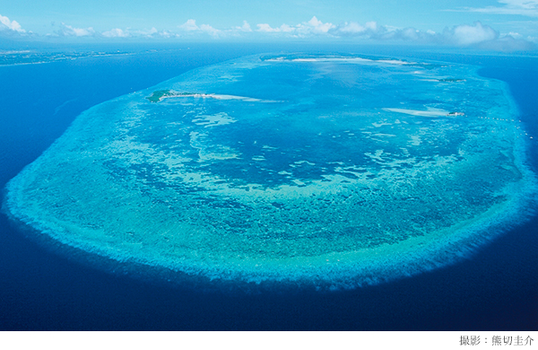

世界一生物の種類の多い、熱帯の珊瑚礁に浮かぶ島
南の海に、火山が隆起してできたひとつの島があった。
その島の周囲を円く取り巻くように、水面より少し下に「珊瑚礁」が育っている。
体長一センチにも満たない珊瑚虫（ポリプ）という小さな動物が、長い長い年月をかけて築き上げた広大な海洋の造形が珊瑚礁だ。
そして、長い地質学的な時間の経過の中で、その火山島はゆっくりと海中に沈んでいく。
太陽の光がないと生きていけない珊瑚は、島が沈みはじめると、光を求めて、少しずつ真上の海面に向かって成長する。そして、島が完全に海中に姿を消してしまった後も、元の位置に、輪のようになって残っている。それが珊瑚礁の環「環礁」だ。
濃い、群青色の海原に、ネックレースのように連なって、白波が砕ける環礁は、自然が地球上に創ったもっとも美しい造形だと、私は思っている。
明るい、澄み切った浅い珊瑚の海に、何万という、魚、貝、イソギンチャクなどの海洋生物が群れている。
特に、フィリピン、インドネシア、ソロモン群島を頂点とする三角形に囲まれた熱帯の珊瑚礁は、世界でもいちばん、海洋に住む生物の種類の多いところだ。
多様な生物たちが、つながりながら、助け合いながら暮らしている。
環礁の環の一部に、砕けた珊瑚のかけらなどが打ち寄せられて溜まり、海面に露出する。その部分が「島」になる。
流れ着いたココ椰子などが芽を吹いて、成長し，そこに人の暮らしが始まる。
カオハガン島は、北緯十一度、フィリピン共和国、セブ島とボホール島の間に位置する、周囲が百キロ以上もある「オランゴ環礁」の環の上に、このようにしてできた、七つの島のひとつである。
面積は約五万平方メ－トル。ほぼ東西に、長さが約四百メートル、いちばん幅の広いところで百七十メートルくらいの、小太りの細長い小さな島である。